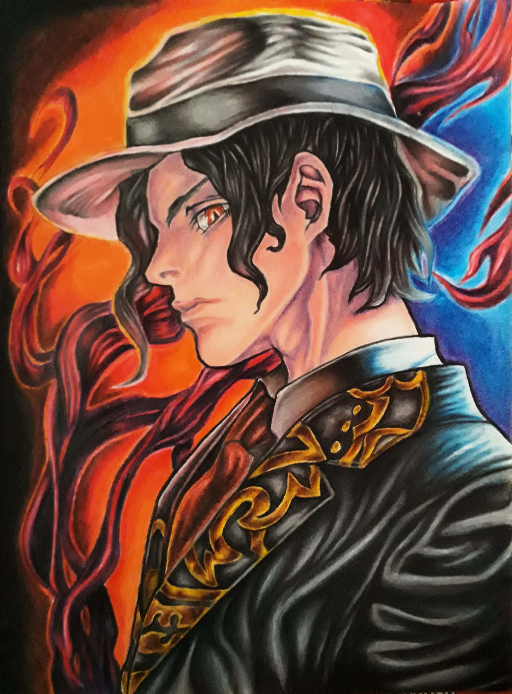
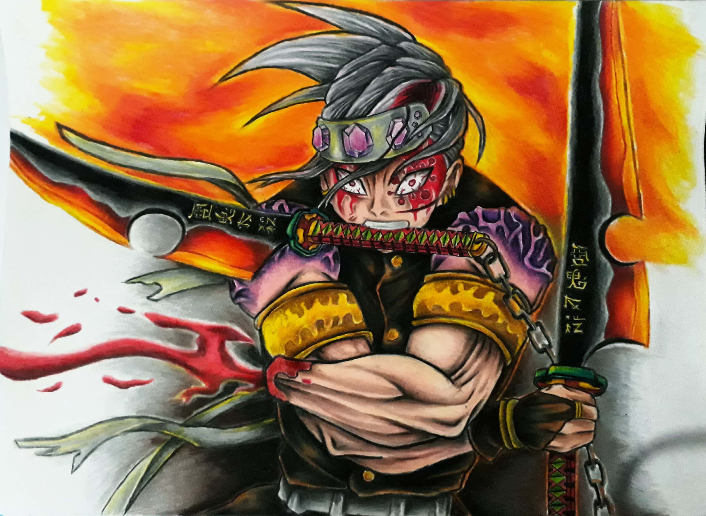
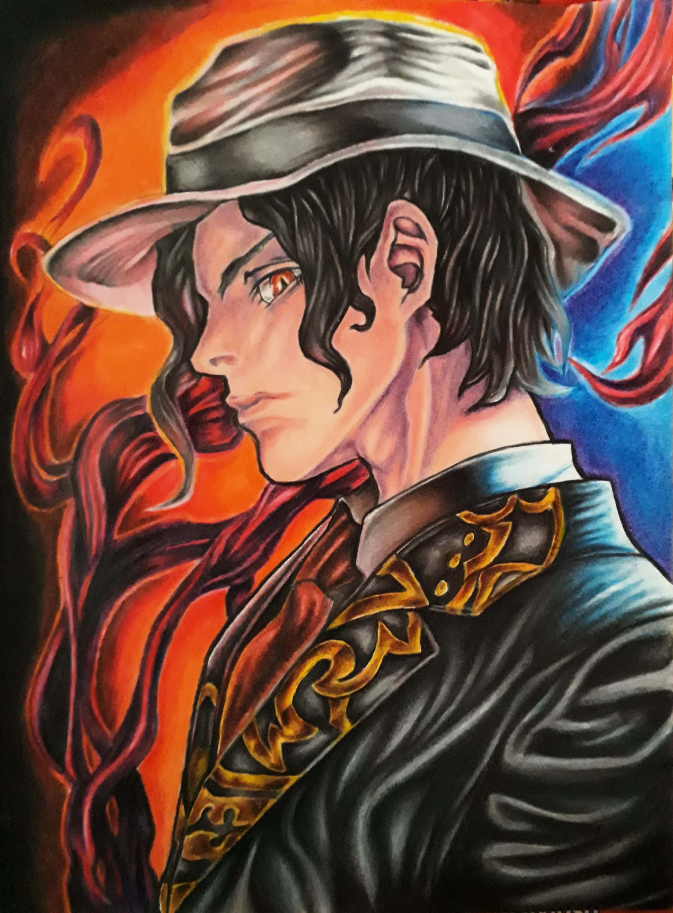
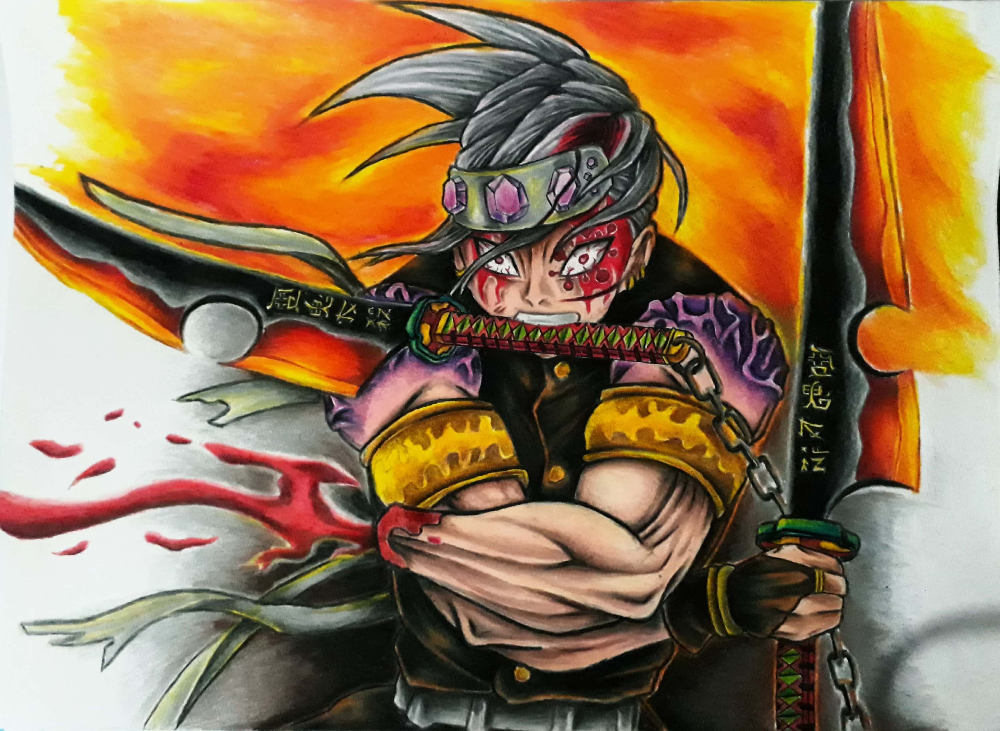
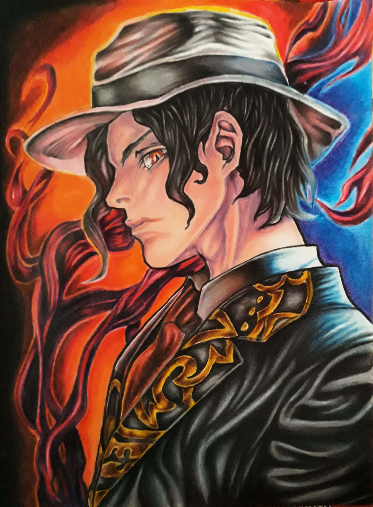
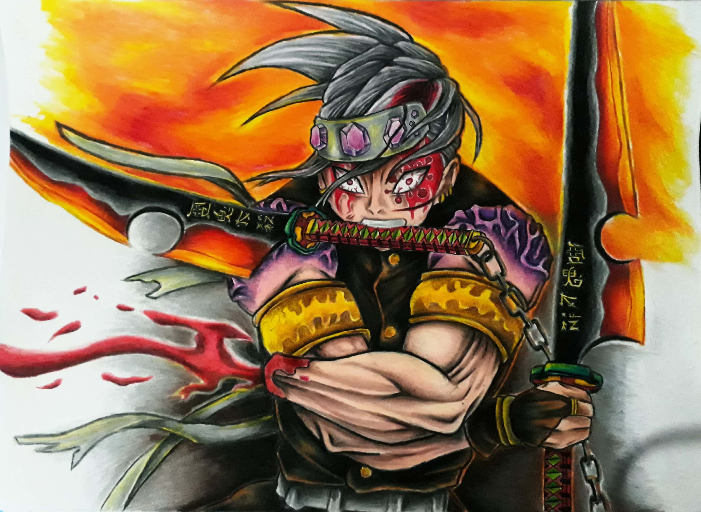

Dibujar es la manera más rápida que tengo para relajarme y recuperar mi concentración. Todos los
días realizo un dibujo pequeño; y cada cierto tiempo realizo un dibujo grande de mayor demanda,
que suelen durar entre 6 horas y un día (pintado). Si bien me falta mejorar mucho, estoy
orgulloso de lo que puedo hacer


Diversión y Estudio - Animación, Videos, Videojuegos y su desarrollo 🎮
Cuando caen las noches libres de responsabilidades (bueno...no siempre) suelo reunirme con
amigos para disfrutar de alguna partida online, utras veces simplemente abro algún juego en
solitario para divertirme. Tambien consumo bastantes videos de Youtube, ya sea para aprender
algo o solo para pasar el rato
En proyectos futuros deseo desarrollar mis propios videojuegos, por ello consumo varios
videotutoriales orientados a programación, dibujo y animación.


 


